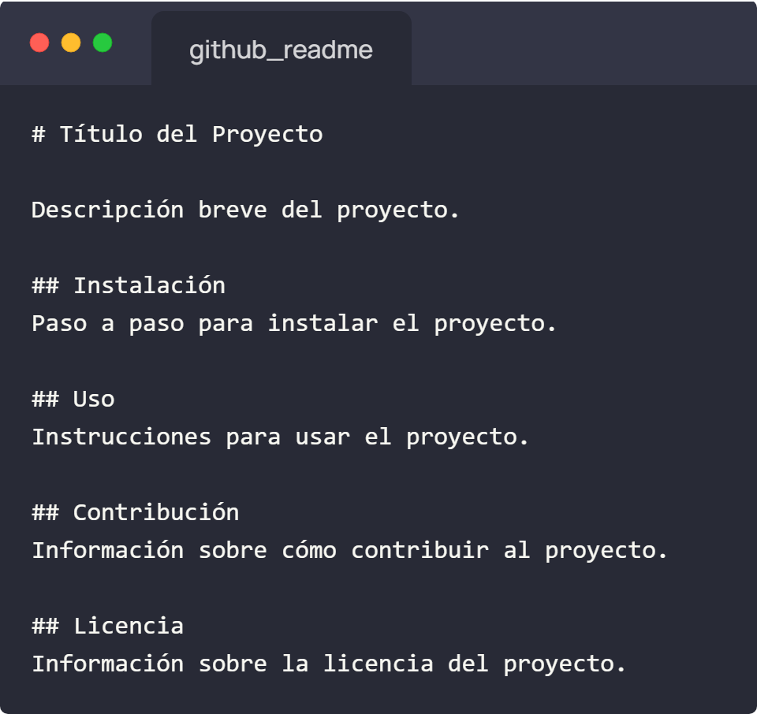

Guía para README.txt
Básicos
1. Accede al Repositorio en GitHub:
- -Inicia sesión en tu cuenta de GitHub.
- -Dirígete al repositorio en el que deseas crear el archivo README.txt.
2. Navega al Editor de Archivos, y una vez dentro del repositorio, haz clic en el botón "Add file" y selecciona "Create new file".
3. Nombre y Ubicación del Archivo: En el campo "Name your file...", escribe el nombre README.txt.
4. Edición del Archivo:
- -En el área de edición, puedes comenzar a escribir el contenido de tu archivo README.txt.
- -Puedes usar Markdown para dar formato al texto si lo deseas. Por ejemplo:
- 
5. Previsualización y Comentario Opcional:
- -Puedes previsualizar el contenido del archivo haciendo clic en la pestaña "Preview".
- -Si lo deseas, puedes agregar un comentario en el campo "Commit new file" para describir los cambios que estás realizando.
6. ¡Importante! ¡Guarda tus cambios!
Una vez que estés satisfecho con el contenido del archivo README.txt, haz clic en el botón "Commit new file" para guardar los cambios.
Estilos básicos para tu README.txt
Recuerda que puedes añadir ciertos elementos que le darán estilo a tu README.txt aplicando algunas normas propias que detecta GitHub de forma automática desde tu documento de texto.
Te dejamos algunas aquí: